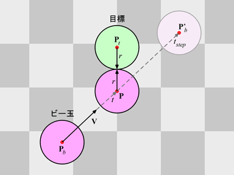
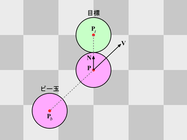
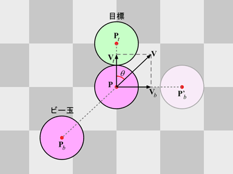

ビー玉の実験
ビー玉遊びっぽいゲームや，ビリヤードみたいなゲームのプログラムを作ってみましょう． 一応，以下に参考のプログラムを示します．このプログラムを実行すると，ステージ上にマゼンタの球が現れます．これをビー玉だと思って，マウスボタンを押したときに現れる目標にぶつけるようなプログラムを書いてみてください． このプログラムは結構長いので， 時間が無ければ Web ページからコピーアンドペーストして構いません．もちろん，スクラッチから書き始めても構いません．いずれもソースファイル名は prog10.c としてください．
#include <stdlib.h>
#include <math.h>
#include <time.h>
#include <GL/glut.h>
#define W 10 /* 台の幅の２分の１ */
#define D 20 /* 台の長さ */
#define R 0.5 /* 球の半径 */
#define V 10.0 /* ビー玉の初速度 */
#define ZNEAR 1.0 /* 前方面 */
#define ZFAR 100.0 /* 後方面 */
#define PI 3.1415926535897932 /* 円周率 */
#define TSCALE 0.001 /* 時間のスケール(ms) */
static int cx, cy; /* ウィンドウの中心 */
static int sx, sy; /* 左クリック位置 */
static int tstart; /* ボタンを離した時刻 */
static double r = 0.0; /* 視線の向き */
static double pbx = 0.0; /* ビー玉の現在位置 */
static double pbz = 0.0; /* ビー玉の現在位置 */
static double vbx = 0.0; /* ビー玉の速度 */
static double vbz = 0.0; /* ビー玉の速度 */
static double ptx = 0.0; /* 目標の位置 */
static double ptz = 5.0; /* 目標の位置 */
static double vtx = 0.0; /* 目標の速度 */
static double vtz = 0.0; /* 目標の速度 */
/*
* 床を描く
*/
static void myGround(double height)
{
const static GLfloat ground[][4] = { /* 台の色 */
{ 0.6, 0.6, 0.6, 1.0 },
{ 0.3, 0.3, 0.3, 1.0 }
};
int i, j;
glBegin(GL_QUADS);
glNormal3d(0.0, 1.0, 0.0);
for (j = -D; j < 1; ++j) {
for (i = -W; i < W; ++i) {
glMaterialfv(GL_FRONT, GL_DIFFUSE, ground[(i + j) & 1]);
glVertex3d((GLdouble)i, height, (GLdouble)j);
glVertex3d((GLdouble)i, height, (GLdouble)(j + 1));
glVertex3d((GLdouble)(i + 1), height, (GLdouble)(j + 1));
glVertex3d((GLdouble)(i + 1), height, (GLdouble)j);
}
}
glEnd();
}
/*
* 画面表示
*/
static void display(void)
{
const static GLfloat lightpos[] = { -3.0, 4.0, 5.0, 1.0 }; /* 光源の位置 */
const static GLfloat bcolor[] = { 0.8, 0.0, 0.4, 1.0 }; /* ビー玉の色 */
const static GLfloat tcolor[] = { 0.1, 0.8, 0.3, 1.0 }; /* 目標の色 */
int tnow; /* 現在時刻 */
double tstep; /* フレーム間隔 */
/* 画面クリア */
glClear(GL_COLOR_BUFFER_BIT | GL_DEPTH_BUFFER_BIT);
/* モデルビュー変換行列の初期化 */
glLoadIdentity();
/* 光源の位置を設定 */
glLightfv(GL_LIGHT0, GL_POSITION, lightpos);
/* 視点の移動（物体の方を奥に移す）*/
glTranslated(0.0, -ZNEAR, -3.0);
glRotated(r, 0.0, 1.0, 0.0);
/* 地面の描画 */
myGround(-R);
/* 目標の描画 */
glPushMatrix();
glTranslated(ptx, 0.0, ptz);
glMaterialfv(GL_FRONT, GL_DIFFUSE, tcolor);
glutSolidSphere(R, 32, 16);
glPopMatrix();
/* ビー玉 */
glPushMatrix();
glTranslated(pbx, 0.0, pbz);
glMaterialfv(GL_FRONT, GL_DIFFUSE, bcolor);
glutSolidSphere(R, 32, 16);
glPopMatrix();
glutSwapBuffers();
/* フレーム間隔 (Tstep) の算出 */
tnow = glutGet(GLUT_ELAPSED_TIME);
tstep = (tnow - tstart) * TSCALE;
tstart = tnow;
/*
* このあたりにビー玉や目標の位置の更新処理を書く
*/
}
static void resize(int w, int h)
{
/* ウィンドウの中心 */
cx = w / 2;
cy = h / 2;
/* ウィンドウ全体をビューポートにする */
glViewport(0, 0, w, h);
/* 透視変換行列の指定 */
glMatrixMode(GL_PROJECTION);
/* 透視変換行列の初期化 */
glLoadIdentity();
gluPerspective(60.0, (double)w / (double)h, ZNEAR, ZFAR);
/* モデルビュー変換行列の指定 */
glMatrixMode(GL_MODELVIEW);
}
static void idle(void)
{
glutPostRedisplay();
}
static void mouse(int button, int state, int x, int y)
{
switch (button) {
case GLUT_LEFT_BUTTON:
if (state == GLUT_DOWN) {
/* マウスのクリック位置の保存 */
sx = x;
sy = y;
/* ビー玉や目標の位置や速度の初期化 */
pbx = pbz = vbx = vbz = vtx = vtz = 0.0;
ptx = 2.0 * (double)W * (double)rand() / (double)RAND_MAX - (double)W;
ptz = (double)(-D) * (double)rand() / (double)RAND_MAX;
/* アニメーション開始 */
glutIdleFunc(idle);
}
else {
/* マウスボタンを離した時刻の保存 */
tstart = glutGet(GLUT_ELAPSED_TIME);
/*
* このあたりでビー玉の初速度ベクトルを設定する
*/
}
break;
default:
break;
}
}
static void motion(int x, int y)
{
r = 90.0 * (double)(x - cx) / (double)cx;
}
static void keyboard(unsigned char key, int x, int y)
{
/* ESC か q をタイプしたら終了 */
if (key == '\033' || key == 'q') {
exit(0);
}
}
static void init(void)
{
/* 時間の初期化 */
glutGet(GLUT_ELAPSED_TIME);
/* 乱数の系列 */
srand(time(0));
/* 初期設定 */
glClearColor(1.0, 1.0, 1.0, 1.0);
glEnable(GL_DEPTH_TEST);
glEnable(GL_CULL_FACE);
glEnable(GL_LIGHTING);
glEnable(GL_LIGHT0);
}
int main(int argc, char *argv[])
{
glutInit(&argc, argv);
glutInitDisplayMode(GLUT_RGBA | GLUT_DEPTH | GLUT_DOUBLE);
glutCreateWindow(argv[0]);
glutDisplayFunc(display);
glutReshapeFunc(resize);
glutKeyboardFunc(keyboard);
glutMouseFunc(mouse);
glutMotionFunc(motion);
init();
glutMainLoop();
return 0;
}
このプログラムは，マウスボタンを押すとステージ上のどこかに目標となる球が現れるようになっています．また，マウスのボタンを押したままマウスを左右に動かせば，向いている方向を変えられます．ただし，ビー玉を動かすことはできないので，目標を正面にとらえてマウスボタンを離したときにビー玉が正面に向かって射出され，目標と衝突するようにプログラムを変更してください．
プログラムを簡単にするために，ビー玉や目標は同じ大きさで質量も同じ球であるとし，回転や慣性モーメントの影響，転がり摩擦や衝突による運動エネルギーの損失などは考慮しないものとします．

ビー玉が等速運動するなら，ビー玉の初期位置を $\mathbf{P}_b$，速度ベクトルを $\mathbf{V}$，初期位置からの時刻を $t$ とすると，ビー玉の現在位置 $\mathbf{P}$ は次式で求めることができます．
アニメーションを行う場合，あるフレームにおけるビー玉の現在位置が $\mathbf{P}_b$ で，アニメーションのフレーム間隔（リフレッシュレートの逆数）が $t_{\text{step}}$ であれば，次のフレーム（画面表示）におけるビー玉の位置 $\mathbf{P}'_b$ は次のようになります．
上図においてビー玉は $\mathbf{P}_b$ でも $\mathbf{P}'_b$ でも目標と接触することはありませんが，実際には $\mathbf{P}$ で接触しています．このため，ビー玉と目標の衝突を，各フレームにおけるビー玉の位置と目標の位置の比較により検出しようとすると，衝突が検出できずにビー玉が目標をすり抜けてしまう場合があります．
そこで，このような問題が起こらない衝突の検出方法を考えてみます．ビー玉も目標もともに半径 $r$ の球だとした場合，この二つが接する条件は次のようになります．
(3) 式に (1) 式を代入した後，両辺を二乗します．ここで $\mathbf{V}^2 = \mathbf{V}\cdot\mathbf{V}$ です．演算子⋅（ドット）はベクトルの内積を表します．
これを $t$ について整理すると，次の二次方程式になります．
この二次方程式の解の公式の判別式 $D$ を求めます．
$D$ が正なら，ビー玉の軌跡が目標と交差します．
ビー玉が目標と接触する時刻 $t$ は，解の公式より次式で得られます．
ここで目標がビー玉よりも前方にあれば $\mathbf{V}\cdot(\mathbf{P}_t - \mathbf{P}_b)$ は正になるので，根号の前の符号が -（マイナス）のとき，時刻 $t$ でビー玉は目標と初めて接触することになります．
また現在のフレームと次のフレームとの間でビー玉が目標と衝突するなら，時刻 $t$ は次の範囲にあります．
したがって，(7) 式と (10) 式がともに成立すれば，現在のフレームから次のフレームまでの間で，ビー玉は目標と衝突します．次に，この衝突によるビー玉の跳ね返り方向を求めます．

まず，衝突位置における，ビー玉の中心から目標の中心に向かう方向単位ベクトル $\mathbf{N}$ を求めます．
衝突後のビー玉の速度ベクトル $\mathbf{V}_b$ と目標の速度ベクトル $\mathbf{V}_t$ は，以下のようにして求めることにします．

ビー玉の速度ベクトル $\mathbf{V}$ の $\mathbf{N}$ 方向の成分 $\mathbf{V}_t$ は次式により求められます．
これが衝突時に目標から見たビー玉の相対的な速度ベクトルになります．ビー玉と目標の質量が等しく，また衝突による運動エネルギーの損失がなければ，運動量保存の法則より，目標はビー玉からこの速度をそのまま受け取って動き出します．
一方，衝突後のビー玉の速度 $\mathbf{V}_b$ は，これも運動量保存の法則から，ビー玉と目標の質量が等しければ次式で得られます．
したがってビー玉が目標と衝突した場合の，ビー玉の次のフレーム（$t_{\text{step}}$ 後）における位置 $\mathbf{P}'_b$ は次のようになります．
次のフレームの描画が完了したら $\mathbf{P}_b$ と $\mathbf{V}$ を更新して，その次のフレームの処理に備えます．
- マウスのボタンを離したときに，現在向いている方向 r の正面にビー玉が射出されるようにしてください．ここで r に格納されている値の単位は度であることに注意してください．
- コンピュータの負荷を節約するために，ビー玉が見えなくなったら（ビー玉までの距離が ZFAR を超えたら），アニメーションを止めるようにしましょう．
- 可能なら目標を複数にして，ビー玉や目標がビリヤードのように互いに衝突しあうプログラムを作成してください．この場合，目標も移動するものとして衝突の検出を行う必要があります．すなわち，(4) 式において $\mathbf{P}_t$ も $\mathbf{P}$ 同様 $t$ の関数で表す必要がありますが，(5) 式が二次方程式であることは変わりません．